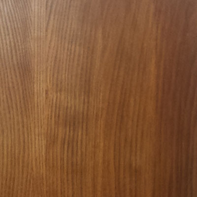
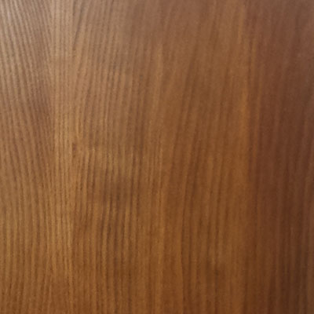
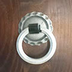
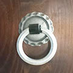

Wir bieten dir Taikos in verschiedenen Größen. Unsere Taikos werden in Form & Größe präzise so hergestellt wie in Japan und in der Maßeinheit Shaku angegeben. Ein Shaku entspricht ziemlich genau 30cm. Somit entspricht 1,4shaku einen bespielbaren Felldurchmesser von 42cm (42er Miya). 1,6shaku sind entsprechend 48cm bespielbarer Felldurchmesser (48er Miya). Für Shime-daikos gibt es in Japan die Größen 1 bis 5.

Trommeltyp & Größe
Ich möchte eine
in der Größe
Holzart & Farbe auswählen >>
Welche Trommel passt zu mir? Miya-, Hira oder Shime-Daiko?
Miya-daiko

Eine 48er Miya-daiko (bzw. 1,6 japanische shaku) ist eine sehr universelle Trommel. Du kannst sie mit sehr dicken Bachi spielen, was für die seitliche Schlagtechnik (japanisch "Yoko-uchi" oder “Naname-uchi”) sehr interessant ist. Bedingt durch die Größe und einem Gewicht von ca. 20kg ist diese Trommel natürlich aufwendiger im Transport. Die Höhe der Miya-daiko beträgt 60cm.
Hier hat eine 42er Miya-daiko (1,4shaku) klare Vorteile und steht optisch und klanglich ihrer etwas größeren Schwester in nichts nach. Sie wiegt unter 14kg und passt wohl in jeden PKW-Kofferraum und fährt auch gerne mal auf der Rücksitzbank mit. Ebenfalls macht sie eine gute Figur auf einem Schrägständer und kann noch mit mittleren Bachi kraftvoll gespielt werden. Die Höhe beträgt 52,5 cm.
Hira-daiko
Wenn deine Taiko noch mobiler sein soll, Du gerne mit Bus und Bahn unterwegs bist und deine Taiko zu jedem Training oder Ausflug mit soll, passt eine Hira-daiko (japanisch "flache Trommel") zu Dir. Wir bauen sie in 4 Größen als 42er (bespielbarer Felldurchmesser 42 cm) bis 51cm (1,4 bis 1,7 shaku). Die Höhe des Trommelkörpers ist ungefähr nur halb so hoch wie bei einer Miya-daiko. So eine Trommel ist viel leichter und kann ohne Auto transportiert werden. Der Klang einer Hira-daiko ist ebenfalls flacher und der Ton länger als bei einer Miya. Für die Taiko-stile Yoko-uchi (japanisch "seitlich schlagen") und Naname-uchi (japanisch "schräg schlagen") benötigst du aber eine oben beschriebene Miya-daiko. Das Spielgefühl bei einer Hira ist einer Miya-Daiko gleichwertig.
Shime-daiko
Die geschnürte Shime-daiko darf in keiner Gruppe fehlen. Wir bauen sie bereits seit dem Jahre 2000 und haben die ersten Instrumente immer noch im Einsatz.
Nur die besten Teile einer Haut kommen beim Bau zum Einsatz und sorgen für den typischen, knackigen Sound. Ca. 6kg bringt dieses Seil-Modell auf die Waage. Wir zeigen Dir gerne, wie man die Shime ohne technische Hilfsmittel nachspannt.
Die Größe 3 ist ein echter Klassiker und immer erste Wahl. Der Körper der Größe 4 ist mit 21cm um 3cm höher als bei der '3er' und es kommen dickere Felle zum Einsatz. Diese Trommel lässt sich noch höher spannen - bei entsprechendem Kraftaufwand.
Holzart & Farbe
<< Typ & Größe auswählen
Für meine Taiko möchte ich
 



...
Haltegriffe auswählen >>

Holzart
Wir verwenden hochwertige, europäische Esche. Als Hartholz liefert es die Qualität die wir zum Taikobau benötigen. Es ist relativ hell und lässt sich gut auf den Wunschfarbton beizen - dabei bleibt die wunderschöne Eschen-Maserung weiterhin sichtbar.
Alternativ zu Esche ist auch Ahorn (gegen Aufpreis) möglich. Ein sehr helles und hartes Holz mit weniger Maserung. Gerne verwende ich Holz auch in seiner Naturfarbe. So hat z.B. Rüster (Ulmenholz) einen schönen Braunton, den man dann nicht überbeizen sollte.
Empfehlen möchten wir Dir Esche!
Farbe
Bei der Wahl der Farbe solltest Du berücksichtigen, ob die Taiko mit anderen Instrumenten aus Deiner Taikogruppe auf der Bühne stehen soll. In diesem Fall ist es von Vorteil, die Optik passend zu den anderen Taikos zu wählen.
Formfaktor und Sound
Unsere Taikos wurden auf Taiko-Festivals schon häufig von Gästen gespielt. Oft wurde uns gesagt - gerade von sehr erfahrenen Trommlern, dass unsere Trommeln sich klanglich positiv abheben. Woran liegt das? Es gibt eine Reihe von Faktoren, die den Klang beeinflussen:
Beim Körper spielt die Form eine wesentliche Rolle. Die bauchige Form trägt wesentlich zum 'runden Sound' bei: Wenn der Stock auf das Fell trifft, wird eine Schallwelle ausgelöst, die sich sowohl in Richtung des 2. Felles ausbreitet, als auch auf die Innenwand trifft. Dort wird sie reflektiert und in Obertöne zerlegt. Das Ergebnis ist der Klang der Taiko, wie wir sie hören und kennen.
Wenn der Körper zu gerade ist, wird der Sound "blechern". Bei Taikos aus Weinfässern sowie billig verarbeiteten Taikos kann man das gut hören.
Um den positiven Effekt der Krümmung auszunutzen, wird dieser verstärkt, indem ich die innere Krümmung erhöhe (siehe Bild). Es entsteht eine Daube, die in der Mitte etwas schlanker ist und nach außen dicker wird.
Klangunterschiede der Hölzer
Alle von uns gebauten Taikos sind aus Hartholz und haben die oben beschriebene Form - innen wie außen. In Kombination mit der aufwendigen Bespannung ist das der Grund für den charakteristischen Klang unserer Trommeln. Es ist richtig, dass auch die Holzarten etwas unterschiedlich klingen. Allerdings ist der Effekt kleiner als bei Form & Bespannung. Deshalb kannst du dich frei nach optischen Aspekten für Holz und Farbton entscheiden.
Haltegriffe
<< Holzart & Farbe auswählen
Ich möchte folgende Griffe:


 

Ohne Haltegriffe
Felle & Nägel auswählen >>
Haltegriffe sind dekorativ und funktionell. Wenn du eine 20kg schwere Miya-daiko auf einen hohen Ständer heben musst, sind sie fast unverzichtbar. Bei kleineren Trommeln wie den Hira-daikos kann man sie, wenn optisch gewünscht, gerne anbringen. Das Handling einer Hira gelingt auch ohne Griffe leicht.
Unsere Haltegriffe werden von einem Kloben gehalten, der durch die Trommelwand hindurchgeführt und von innen verschraubt wird. Die schwarze Grundplatte gibt es in zwei Größen. Darauf befindet sich dann entweder eine flache Messingrosette oder eine dickere Stahlrosette. Letztere kann sogar ohne die Grundplatte verwendet werden - eine sehr schöne Option für kleinere Trommeln.
Die kleinere Grundplatte hat eine Kantenlänge von 10,5cm, die größere von 12cm. Bei einer Miya-daiko ab 48cm Durchmesser kannst du die große Ausführung nehmen. Ansonsten sehen die kleineren immer gut aus.
Bei einer Hira-daiko würden sich die Spitzen der schwarzen Platte unterhalb der Fellbespannung befinden. Für diesen Fall gibt es die Option 'Stahlrosette ohne Grundplatte'.
Felle & Nägel
<< Haltegriffe auswählen
Folgende Nägel stehen zur Auswahl:


xxx
Deine Taiko >>
Nägel
In der Regel kommen Nägel mit 20mm-Kopf aus deutscher Herstellung zum Einsatz. Zweireihig in Hartholz genagelt, erzeugen sie eine hohe Festigkeit.
Alternativ gibt es Nägel aus Japan. Ihr Kopf ist mit 19mm bzw. 17mm etwas kleiner und stärker gekrümmt, ein "Look" wie man ihn in Japan gewohnt ist. Der Nagelstift ist länger und dicker und sorgt für noch besseren Halt. Interessant für eine einreihige Nagelung oder größere Trommeln mit sehr dicken Fellen.
T-Skins: Rindspergament und eine Prise Magie
Für alle Hiras und Miyas benutzen wir 'Rindspergament natur' (ungebleicht) in einer optimalen Stärke passend zur Größe der Trommel. Zunächst haben die rohen Felle eine Farbe zwischen Honig und Brauntönen. Später, durch das starke Spannen, werden die Felle sehr hell.
Bevor wir die Felle das erste Mal aufziehen, werden sie zu 'T-Skins' (bzw. 'Taiko-Skins') weiterverarbeitet. Dieses Verfahren ist über einen Zeitraum von 15 Jahren entwickelt worden, mit dem Ziel, Felle zu bekommen, die besser klingen und ihren Klang längerfristig wahren.
Jedes Fell wird zweimal aufgezogen: beim ersten Durchgang entsteht bei noch mäßiger Spannung die charakteristische Form der Felle mit geradem Rand und den typischen 'Röhrchen-Ohren'. Nach dem Trocknen wird dann die Schlagfläche nochmals eingeweicht und mit maximaler Kraft gespannt. Insgesamt bedarf es also 4 Spannvorgänge für jede Taiko - und ca. 3 Wochen Zeit.
Sound
Klang der Felle
Klang 1. Fell Klang 2. Fell
Klang
lalala
Deine Taiko
Option 2: Schick doch auch gerne deinem Taikokumpel eine Mail und zeige ihm/ihr deine Trommel: Einfach das Formular ausfüllen.
| Dein Name | |
| Deine Email | (wir setzen dich auf 'cc') |
| Deine Nachricht | |
| Der Link | Der Link zu Deiner Taiko |
| Email des Empfängers | |